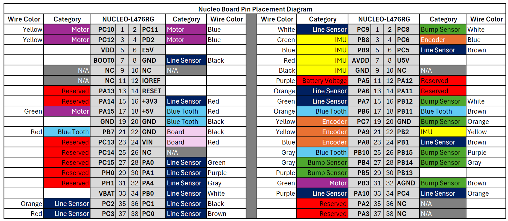
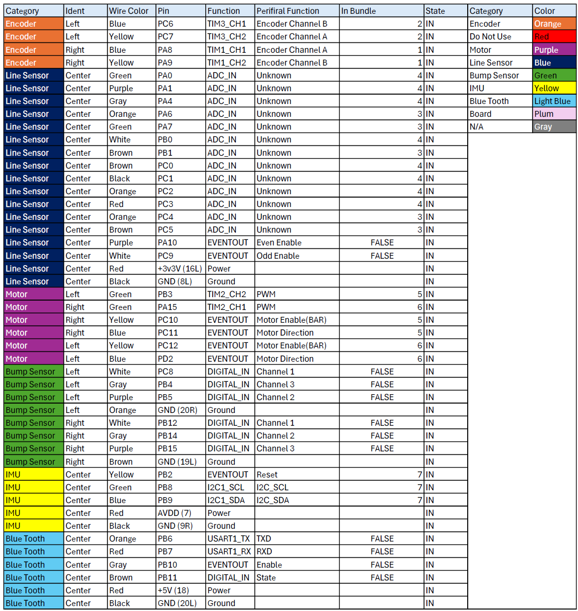
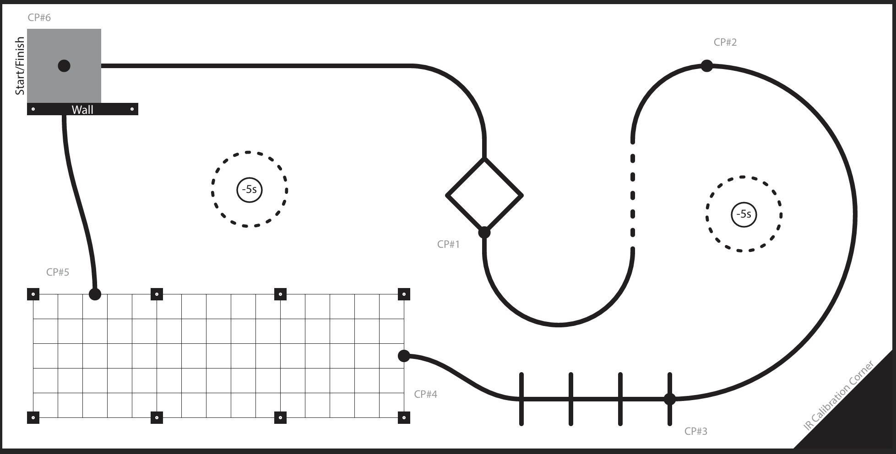
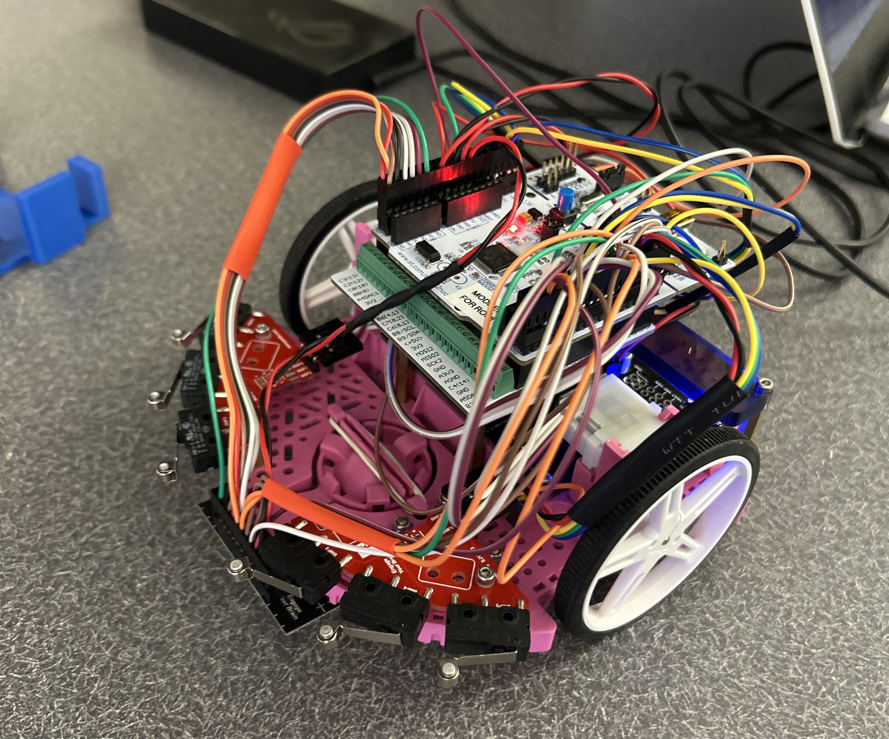

Hardware Overview
This section covers the components used in the Romi robot.
Base Chassis
The base chassis of the Romi robot is a compact and lightweight design that allows for easy maneuverability and stability. The chassis is made of durable materials and is designed to accommodate the various components of the robot. The chassis is equipped with mounting points for the motors, sensors, and microcontroller. The chassis also includes a battery compartment for easy access to the power supply. The full chasis unit can be directly purchased from polulu’s website (https://www.pololu.com/category/202/romi-chassis-and-accessories).

Microcontroller
The microcontroller used in this project is the Nucleo STM32-L476RG. This microcontroller is based on the ARM Cortex-M4 architecture and features a 32-bit processor with a maximum clock speed of 80 MHz. It has 512 KB of Flash memory and 128 KB of SRAM, making it suitable for complex applications. The Nucleo board also includes a USB interface for programming and debugging, as well as a variety of GPIO pins for connecting to sensors and other peripherals. The Nucleo board is compatible with the Arduino IDE, making it easy to program and develop applications. For our project specifically, we used the Nucleo board in conjuction with the shoe of brian developed by professor spluttflob (https://spluttflob.github.io/ME405-Support/shoe_info.html) to provide more a stable USB interface for running the micropython code.
Sensors
The Romi robot is equipped with several sensors to enable it to navigate and follow lines. The sensors used in this project include:
QTR-HD-13A Reflectance Array: This sensor array consists of 13 infrared reflectance sensors that can detect the presence of a line on the ground. The sensors are arranged in a line and can be used to determine the position of the line relative to the robot. The QTR-HD-13A sensor is capable of detecting both black and white lines, making it suitable for a variety of line-following applications.
BNO055 IMU: The BNO055 is a 9-axis inertial measurement unit (IMU) that provides orientation and motion data. It includes a 3-axis accelerometer, a 3-axis gyroscope, and a 3-axis magnetometer, allowing it to provide accurate orientation information. We specifically used the IMU to record the robot’s heading and to help with the line following algorithm.
Bump Sensors: The Romi robot is also equipped with bump sensors that can detect obstacles in its path. These sensors are typically used to stop the robot or change its direction when an obstacle is detected. We used the bump sensors to stop the robot when it made contact with the wall specifically.
Wiring/Pinout design
The wiring and pinout design of the Romi robot is crucial for ensuring that all components work together seamlessly. The wiring diagram shows how the various components are connected to the microcontroller, including the motors, sensors, and power supply. This wiring diagram was developed to display the pins used in the nominal configuration of the Nucleo pinout diagram.
{kind=link}
The pinout table provides a detailed description of each pin on the microcontroller and its corresponding function. This information is essential for understanding how to connect the various components and for troubleshooting any issues that may arise.
{kind=link}
Course/Objective
For our project, we used a standard 3-axis coordinate system to define the robot’s position and orientation. The robot’s position is defined by its x and y coordinates, while its orientation is defined by its heading angle. The robot’s heading angle is measured in degrees, with 0 degrees representing the robot facing straight ahead. The robot’s position and orientation are updated based on the data from the sensors and the motor encoders. The course used in this project as the test course can be seen below. The course featured a combination of non-linear and linear paths to test the robot’s ability to follow a line, with obstacles such as pillars and a wall placed in the course to test the robot’s ability to navigate around them. The end objective was test the reliability and robustness of the robot’s algorithm to complete the course in the shortest time possible. The course featured two off course objectives that removed five seconds from the total time if completed.
{kind=link}
This course was designed and provided to us by the ME405 Mechatronics instructor, Charlie Refvem.
Final Configuration
This is the final configuration of the Romi robot, including all the components and wires mentioned above.
{kind=link}
The following section will cover the software used to control the Romi robot and the algorithms implemented for line following and obstacle avoidance.